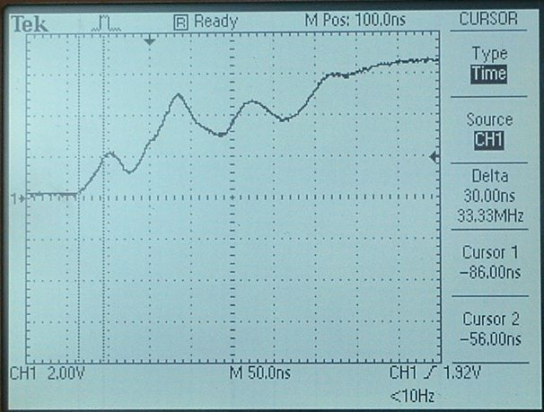

| Oct. 4, 2007 | |
| 
50ns/div Photogate P1 -- old Pasco connected to scope and NI board |
25ns/div Photogate P1 -- old Pasco connected to scope |
|
50ns/div Photogate P2 -- old Pasco with gray replacement cable connected to scope and NI board |
25ns/div Photogate P2 -- old Pasco with gray replacment cable connected to scope |
|
50ns/div Photogate P3 - old Pasco connected to scope and NI board |
25ns/div Photogate P3 -- old Pasco connected to scope |

50ns/div Photogate P4 - old Pasco connected to scope and NI board |
50ns/div Photogate P4 - old Pasco connected to scope |
|
250ns/div Photogate 05 -- New Pasco connected to scope and NI board Note that the rise time to 2 volts is about one division (250ns). |
250ns/div Photogate 05 -- New Pasco connected to scope rise time to 2 volts is 200 ns. |
|
50ns/div Photogate 06 -- Vernier connected to scope and NI board |
50ns/div Photogate 06 -- Vernier connected to scope |